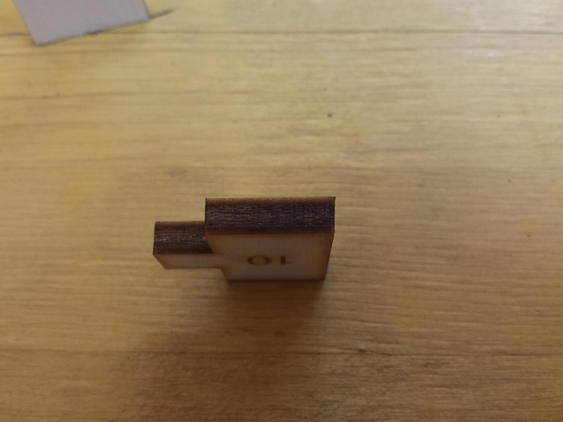

For this week we have to experiment and take confidence with the computer controlling cutting machine.
there are a lot of type of this: laser, water-jet, vinylcutter, plasma, withe-hot, etc.
i used the hot wire technique before for building my own air-plane model,(but not the mechanic version, the manual version, but the technology is the same).
Vinylcutter
We start with the vinylcutter: this is simply a xy router with a knife on the head that can be pushed down or not, when it is pushed, it cut the paper/vinyl under it.
It can be used for making stencil or mask for painting, making t-shirt, or if used with the special conductive sheet is possible to make some circuit.
The parameter used to be modified on this system, is the force that the knife do on the paper; it need to be enough to cut all the vinyl or sheet but not the part under it.
I take a free "hiphop" font on internet and I import it in my pc
I design a simple "tag write" on Inkscape and export as a .png image. The image have to be preferably blanc and withe and not be only the pattern but colour dense, because the program that control the Roland vinyl cutter extract the border from the compact shape.
I have to convert the .png file in a .jpg format so the Roland Camn can interpret that.
After that following steps are simple: extract the shape of the cut in the program and make the machine cut.
The final result sticker is attached on my laptop.
Laser Cutter
The most used in the actual process of production is the laser cutting machine.
There are some different type and them have different usage.
The main ones are co2 laser, fibre laser, diode laser, solid state laser.
Fibre and co2 are usually used for cutting different type and thickness of wood and plastic materials,
solid state is used for engrave and work on glass and other surface (like metal).
Diode is used for engrave and cut very thin material (small power).
We work on the most common laser machine present in the fablab: the co2 laser cutter.
We experiment different things and different setting.
How it work and KERF
First of all we study the "way" the machine work: it use pulses of energy produced by the vibration of the gas inside the laser tube, to burn the material.
The ray vaporize the material and so it can be cut.
Considering this the first thing, we expect that the cut is not measureless but it have a dimension.
This dimension is called KERF and it’s actually the real dimension of the laser beam that burn the material.For this reason the KERF depend on the material used, the speed of the cut, the thickness of the material, the power of the laser, the focus of the laser beam and the compressed air.
In order to "discover" the KERF of ours machine we make some test:
we cut a certain number of parallel cut on the plywood (in our case 4mm and 6mm) and we measure the dimension of the hole and the dimension of the cut pieces.
The difference of this 2 measures divided by the number of the cut made, is the KERF (relative to the setting of speed, material, air flow, focus and so on).
Knowing this value is useful to project the snap-fit system for not using some glue or other kind of blocking system, and also to make fitting not too much loose.
After several test we discover that the KERF is around 0.15mm on the 4mm plywood with the setting of speed and focus shown below. We make also some test for the snap fit system but this time we use the 6mm plywood and the results are shown in the video.
This test shown us that the laser have also a shape, it’ss not a straight cut, and it will influence the final dimension of the cut part. The shape is triangular (or conical if we concentrate on the laser beam), so it can make fitting more loosing in some way or more strength in the other. (soon I will upload the video of the test made).
The compressed air is useful to extinguish the fire produced by the burning of the material and for make the cut go deeper removing the vaporized material.
It can help to keep the cut surface not so dark by making the pressure higher.

The most important parameter for make a good cut with the laser cutter is the speed of movement: this determinate the deepens of the cut.
It must be appropriate to the thickness of the material, a too fast movement determinate a not ended cut, a too much slow movement determinate a more burned cut and a more wide KERF.
We find that a good cut is obtained with 9 speed for 3mm plywood, 6 for 4mm , 4for 6 mm and 3.2 for 8mm.
I also experiment the engraving process: is a way to make some mark on the material, it will burn the first layer of the material down to a certain deepness.
Different deepness can be obtained from different setting.
Usually engraving is made setting the highest speed and lowering the power of the ray.
In my case I use a 380 px resolution 100% speed 80% power and it burn down to a mm of the plywood.
The file that can be cut are .dxf (from rhino and similar) and vector (inkscape and similar).
For this week I make a box for my laptop power adapter: I make it all by snap fitting an no use of glue or other.
I use a KERF of 0.2mm for making the fit more strong (the plywood is a soft material and is loose some of their force under pressure, so I consider a bigger KERF).
I also experiment the some pattern for making the wood bent.
I download it for free (open source) and applied it on my design in rhino.
After the assembly I discover that the best side to bend the wood is on the side of the cut, because of the shape of the cut (them help in the elasticity of the material).
I also discover that the curve of the wood is a little small ant the wood will break a little bit and for that reason it isn't long enough for make the box closing on itself.
All displayed on the picture.


 Download the Rhino file of the box
Download the Rhino file optimized to be laser cutted (rhino 4)
Download the Rhino file of the box
Download the Rhino file optimized to be laser cutted (rhino 4)